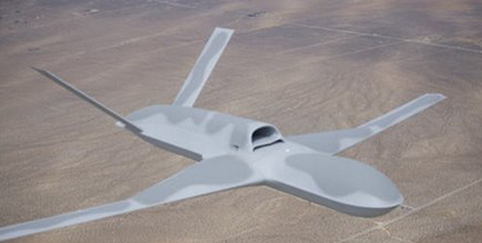
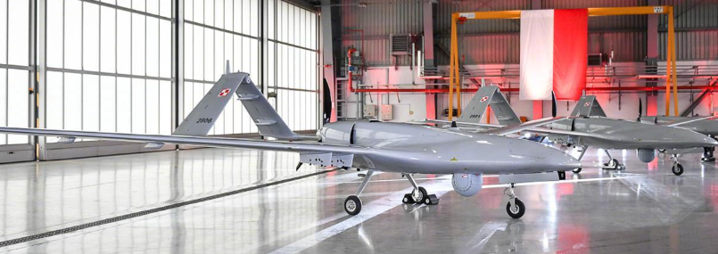
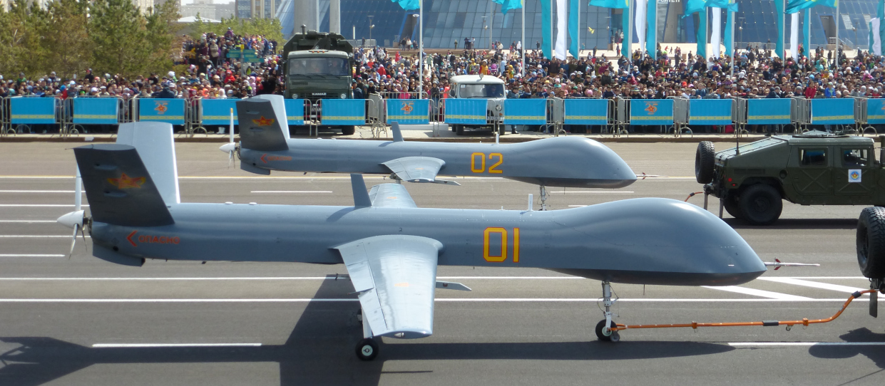
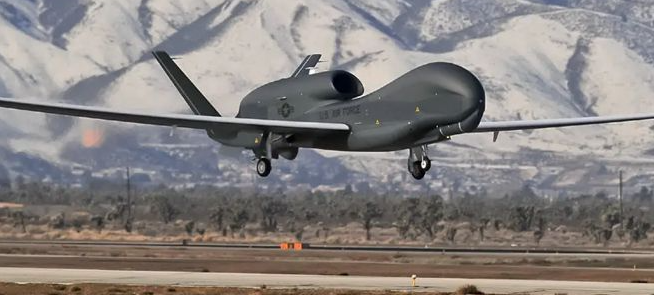

|
|
|
|
盘点一些世界著名的军用无人机
复仇者无人驾驶战斗机

复仇者(Avenger)是由美国通用原子公司（General Atomics）研制的具备隐身能力的喷气推进式远程无人驾驶战斗机 (UCAV)。它是在MQ-9
收割者无人战机的基础上，为应映美军未来空战需求而后续开发的新机型。
Bayraktar 无人机

Bayraktar
TB2是土耳其拜卡公司开发的一款中空长航时(MALE)无人作战飞机(UCAV)，由毕业于麻省理工学院的军事工程师塞尔柱克·拜拉克塔尔开发，并由军工企业拜卡公司研发和生产制造。
翼龙-Ⅱ无人机

翼龙-Ⅱ无人机（英文：Wing Loong Ⅱ UAV [1] ，代号：翼龙 [18] ），是中国航空工业成都飞机设计研究所研制的一型察打一体无人机
全球鹰无人机

全球鹰无人机是美国研制的一款高空长航时无人机，虽然它不想捕食者死神无人机那样，具备强大的对地攻击能力。但是，它的战略侦察能力非常强大，可以一次性扫描大片区域.
|
|
| |